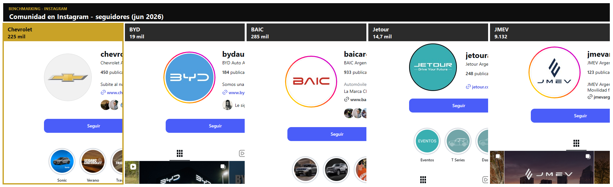
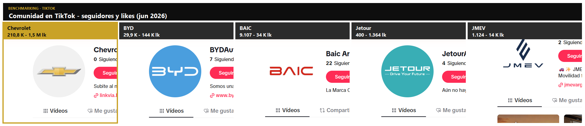
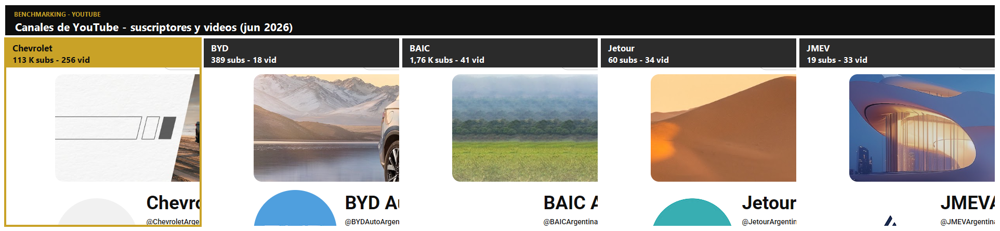
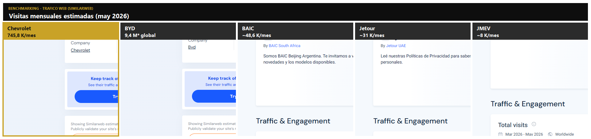
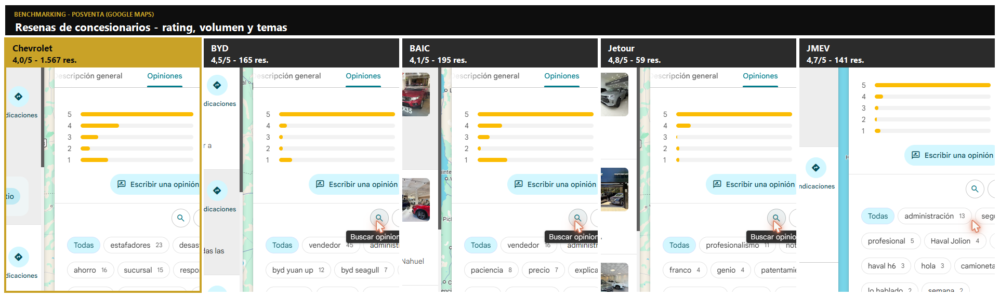
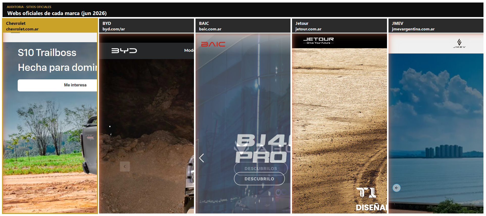

Posicionar a Chevrolet Spark EUV como el eléctrico con la red de respaldo y posventa más confiable de Argentina, convirtiendo la mayor barrera del mercado (miedo al servicio y la garantía) en su principal ventaja competitiva, para captar consideración y cerrar ventas frente al dominio de BYD en un horizonte de 3 meses.
Auditoría digital de la marca asignada y su competencia directa · mercado y tendencias de uso · benchmarking.
El segmento eléctrico es el único en crecimiento sostenido mientras el mercado automotor general cayó ~13,6%. El gobierno eliminó aranceles para autos extrazona con FOB < USD 16.000, abriendo la puerta a marcas chinas. BYD desplazó a Toyota del liderazgo. ACARA proyecta que los EV superen el 10% del mercado total en 2027. La adopción es urbana y concentrada en las grandes ciudades — justo donde la infraestructura de carga y los compradores conviven.
Fuentes: Ámbito, El Economista, 16 Válvulas, Reporte Asia, Cipolletti Digital (datos ene–may 2026).
El modelo real de Chevrolet en Argentina 2026 es el Spark EUV (102 CV, 42 kWh, 360 km, ARS 35,7 M). Completa el podio de eléctricos puros con 167 unidades (3° lugar), detrás del BYD Dolphin Mini (1.695) y el BYD Yuan Pro (585). Es la única opción de marca tradicional con respaldo histórico del lote: red de concesionarios instalada, app myChevrolet, plataforma “Agenda tu Servicio” / Servicio Personalizado, GM Owner Center, asistencia 24/7 y OnStar. Su debilidad: volumen y notoriedad digital muy por debajo de los chinos en el canal eléctrico.
Auditamos en dos niveles complementarios, porque al modelo lo sostiene la marca: el armazón de visibilidad, confianza y posventa del Spark EUV es Chevrolet, igual que a la Dolphin Mini la sostiene BYD. Por eso cada dato se releva en la capa que le corresponde.
Comunidad y autoridad de la marca, tráfico del sitio corporativo y —sobre todo— el ecosistema de posventa (red de talleres, app, agenda de service). Aquí vive la ventaja de Chevrolet y nuestro enfoque del TP.
El cara a cara que ve el comprador: Spark EUV vs Dolphin Mini — micrositio del modelo, precio, ficha, autonomía, keywords y anuncios del modelo. Aquí se define la conversión.
| Capturar a nivel MARCA (Chevrolet, BYD…) | Capturar a nivel MODELO (Spark EUV, Dolphin Mini…) |
|---|---|
| Seguidores y engagement (IG / TikTok / YouTube de la marca) | Micrositio / landing del modelo |
| Tráfico del sitio corporativo (chevrolet.com.ar) | Keywords y anuncios del modelo (“comprar Dolphin Mini”) |
| Ecosistema posventa: app, agenda de service, red de talleres | Precio, ficha técnica, autonomía y garantía del modelo |
| Reseñas / rating de concesionarios, autoridad de marca | Reviews y videos específicos del modelo |
| Share of voice de la marca en el segmento EV | Posición del modelo en patentamientos (167 u, 1.695 u…) |
| Cuenta oficial (Instagram) | Seguidores | Lectura estratégica |
|---|---|---|
| Chevrolet Argentina (@chevroletarg) | 224.000 | Comunidad instalada masiva: activo heredado para empujar el EV sin partir de cero. |
| BYD Auto Argentina (@bydautoarg) | ~19.000 | Líder en ventas EV pero comunidad digital aún incipiente. |
| Ventaja Chevrolet | ≈ 12× | Gana en ventas quien tiene audiencia; nosotros ya la tenemos. |
Seguidores verificados vía Instagram (jun 2026). A esta capa pertenece también el ecosistema de posventa de la marca (app myChevrolet, agenda de service, red de talleres) — el verdadero diferencial. Completar con las capturas y agregar TikTok/YouTube.
El comprador no elige “Chevrolet vs BYD” en abstracto: compara Spark EUV vs Dolphin Mini. Aquí se define la conversión. El modelo real de Chevrolet en Argentina 2026 es el Spark EUV
| Modelo | Tipo | Precio aprox. | Autonomía | Batería | Garantía (vehículo / batería) |
|---|---|---|---|---|---|
| Chevrolet Spark EUV NUESTRO | 100% EV · SUV urbano | $35,7 M ARS | 360 km | 42 kWh · 102 CV | 3 años / 100.000 km · batería 8 años / 160.000 km |
| BYD Dolphin Mini | 100% EV · city | USD 22.990 | 280–380 km | 30 / 43,2 kWh LFP Blade | 6 años / 150.000 km · batería 8 años / 150.000 km |
| JMEV Easy 3 | 100% EV · el más barato | USD 18.900 | 330 km (CLTC) | 30,2 kWh · 68 CV | 3 años / 100.000 km · batería 8 años / 120.000 km |
| BAIC EU5 | 100% EV · sedán | USD 22.700 | 401 km | 120 kW · 240 Nm | 7 años / 100.000 km · batería: no informa |
| Jetour T1 i-DM | PHEV · SUV (no es 100% EV) | USD 35.800 | Híbrido + nafta | 26,7 kWh + 1.5T | 5 años / 150.000 km · batería 8 años / 160.000 km |
Garantías verificadas en fichas técnicas y sitios oficiales de cada marca (jun 2026): chevrolet.com.ar, byd.com/ar, jetour.com.ar, jmevargentina.com.ar, baic.com.ar. Nota: BYD remite al distribuidor para el detalle fino de cobertura; BAIC no informa garantía de batería de forma pública.
| Marca / Modelo | Enfoque de mercado | Unidades ’26* | Fortaleza digital | Punto débil que explotamos |
|---|---|---|---|---|
| Chevrolet Spark EUV NUESTRA MARCA | Fidelización y posventa | 167 | Red física, app myChevrolet, OnStar, servicio nacional | Bajo volumen y poca voz digital en EV |
| BYD Dolphin Mini | Volumen / penetración | 1.695 | Líder absoluto, fuerte inversión en medios | Posventa joven, red en construcción, garantía dudosa |
| BYD Yuan Pro | Volumen / SUV | 585 | Awareness alto por paraguas BYD | Mismo gap de servicio que Dolphin |
| JMEV Easy 3 | Joven / flotas urbanas | n/d* | Precio más accesible | Marca desconocida, sin respaldo percibido |
| Jetour T1 i-DM (PHEV) | Tecnología Travel+ / beneficio impositivo | n/d* | Argumento fiscal (no paga patente) | Es híbrido, no 100% eléctrico |
| BAIC EU5 | Profesional / flotas premium | n/d* | Producto consolidado (sedán) | Nicho corporativo, poco B2C |
*Unidades patentadas acumuladas ene–may 2026 (eléctricos puros), datos preliminares. Fuente oficial correcta: ACARA (patentamientos por modelo). n/d = ACARA no publica el dato del modelo en el período: sus series quedaron interrumpidas en 2026 por la falta de datos de la DNRPA. No se usa ADEFA para esta columna porque mide producción, exportaciones y ventas mayoristas a concesionarios — no patentamientos por modelo (mezclarlos sería metodológicamente inconsistente).
Capturas reales de cada marca consolidadas por categoría para comparar de un vistazo. Chevrolet resaltado en dorado. Relevamiento jun 2026. Clic en una comparativa para ampliarla



Fuente: perfiles oficiales de Instagram, TikTok y YouTube de cada marca (Argentina), jun 2026. Lectura: Chevrolet lidera en TikTok y YouTube; BAIC sorprende y supera a Chevrolet en Instagram (285 K vs 225 K).

Fuente: SimilarWeb (may 2026). Chevrolet domina el tráfico argentino con 745,8 K visitas/mes. *BYD se mide sobre el dominio global byd.com (no tiene .com.ar propio), por eso su cifra es global y no comparable 1:1.

Fuente: Google Maps — concesionarios oficiales de cada marca, jun 2026.

Fuente: sitios oficiales de cada marca, jun 2026. El set completo de evidencias (5 marcas × 8 categorías) está disponible en la carpeta /Evidencias y en el anexo del enlace funcional.
Cada objetivo se desprende del diagnóstico y se conecta luego con una táctica, un KPI y una parte del presupuesto (coherencia exigida por la rúbrica).
| # | Objetivo SMART | Métrica / benchmark | Se conecta con |
|---|---|---|---|
| O1 | Notoriedad: aumentar +40% el alcance y +30% los seguidores de Chevrolet en el segmento EV en CABA, Córdoba, Rosario, Mendoza y Bahía Blanca en 3 meses. | Reach, nuevos seguidores, share of voice EV | Social + Influencers (TOFU) |
| O2 | Consideración: generar 900 leads calificados y 300 test drives agendados en 90 días. | Leads, CPL, test drives, CTR Search | Search + Landing + Lead magnet (MOFU) |
| O3 | Conversión: atribuir ≥ 60 reservas/ventas a los canales digitales en el trimestre. | Ventas atribuidas, CAC, tasa de cierre | Remarketing + Experience Centers (BOFU) |
| O4 | Fidelización (el diferencial): lograr que el 70% de los nuevos compradores active el programa de posventa digital y agende su 1er service. | % adopción posventa, agendas creadas | Onboarding + App + CRM (Loyalty loop) |
| O5 | Reputación: alcanzar un NPS ≥ 60 y 4,5★ promedio en reseñas de servicio durante el período. | NPS, rating Google, reseñas posventa | Experiencia + Email + Seguimiento |
Definición de audiencias, canales y embudo de conversión.
28–45, CABA/Córdoba/Rosario, profesional, eco-consciente y tecnológico. Miedo clave: “¿quién me lo arregla y mantiene la garantía?”. Le hablamos con respaldo y posventa.
35–50, segundo auto para ciudad, sensible al costo total. Le mostramos ahorro en combustible + mantenimiento reducido + financiación Chevrolet.
PYMEs y empresas con responsabilidad ambiental. Le ofrecemos gestión de flota, posventa programada y reporting de uso (B2B).
Google Ads sobre intención de compra y keywords de posventa EV; SEO de “servicio auto eléctrico”.
Meta + TikTok geolocalizado en las 5 ciudades. Awareness y captación de leads.
Creadores de autos/tech/lifestyle sustentable que prueben el service y la experiencia, no solo el auto.
Automatización de nurturing, onboarding y posventa vía myChevrolet y email (motor de fidelización).
Puntos de venta especializados + entrega con capacitación + posventa inteligente con seguimiento por rating de uso. Es el corazón creativo que rompe el ruido publicitario.
Transformamos la red instalada de Chevrolet en “EV Experience Centers”: puntos especializados en eléctricos ubicados en los nodos estratégicos de las 5 ciudades prioritarias —CABA, Córdoba, Rosario, Mendoza y Bahía Blanca— (cerca de zonas de alto tránsito profesional y de la infraestructura de carga). No es solo un local de venta: es un centro de experiencia, entrega y servicio.
Ejecución a 12 semanas (3 meses). Incremental: cada mes construye sobre el anterior.
| Etapa / Acción | S1 | S2 | S3 | S4 | S5 | S6 | S7 | S8 | S9 | S10 | S11 | S12 |
|---|---|---|---|---|---|---|---|---|---|---|---|---|
| Setup: auditoría, píxel, CRM, landing | ||||||||||||
| Mes 1 · Awareness (Social + Influencers) | ||||||||||||
| Mes 1–2 · Search siempre activo | ||||||||||||
| Mes 2 · Consideración (lead magnet, test drives) | ||||||||||||
| Mes 2–3 · Remarketing & conversión | ||||||||||||
| Lanzamiento “EV Care” + Onboarding | ||||||||||||
| Posventa digital + reportes de uso | ||||||||||||
| Medición, optimización y reporte al cliente | ||||||||||||
Hitos de medición al cierre de cada mes (S4, S8, S12). Leyenda: setup/medición · awareness/posventa · search · conversión.
Propuesta creativa de piezas por canal: Social Media · Influencers · Search.
| Partida | Detalle | % inversión | Monto (ARS) |
|---|---|---|---|
| Paid Social (Meta + TikTok) | Awareness + leads, geolocalizado 5 ciudades | 28% | 10.080.000 |
| Search (Google Ads) | Intención de compra + keywords posventa | 22% | 7.920.000 |
| Influencers | 1 macro + 4 micro, foco experiencia/posventa | 15% | 5.400.000 |
| Producción de contenido | Reels, fotos, mockups, video onboarding | 12% | 4.320.000 |
| Plataforma posventa “EV Care” | Micrositio de agenda + reportes + integración app | 10% | 3.600.000 |
| CRM / Email / Automatización | Nurturing, onboarding, IA chatbot | 8% | 2.880.000 |
| Medición y fee de gestión | Analytics, dashboards, optimización | 5% | 1.800.000 |
| TOTAL | 100% | 36.000.000 | |
Distribución coherente con los objetivos: el grueso va a captación (Social+Search = 50%), pero se reserva 1 de cada 5 pesos al diferencial de posventa (plataforma + CRM = 18%), que es lo que sostiene la fidelización.
| Objetivo | KPI principal | Meta 90 días | Etapa embudo |
|---|---|---|---|
| O1 Notoriedad | Alcance / nuevos seguidores / Share of Voice | +40% reach · +30% followers | TOFU |
| O2 Consideración | Leads calificados · CPL · Test drives | 900 leads · 300 test drives | MOFU |
| O2 Consideración | CTR Search · Quality Score | CTR ≥ 4% · QS ≥ 7 | MOFU |
| O3 Conversión | Ventas atribuidas · CAC | ≥ 60 ventas · CAC ↓ 15% | BOFU |
| O4 Fidelización | % adopción posventa · agendas creadas | 70% activa “EV Care” | Loyalty |
| O5 Reputación | NPS · rating de reseñas | NPS ≥ 60 · 4,5★ | Loyalty |
En un mercado donde todos venden el auto más barato, Chevrolet vende lo que ningún chino puede todavía: la certeza de que vas a estar acompañado durante toda la vida del vehículo. Convertimos la posventa —la mayor angustia del comprador eléctrico— en el motor de adquisición, conversión y fidelización. Esa es la jugada del Grupo 31.
Esta sección es para vos y el grupo. Sacala antes de exportar el PDF final.
| Criterio | Estado en este borrador |
|---|---|
| 1 · Carátula completa | (falta nombre del docente) |
| 2 · Análisis situacional completo | texto · faltan capturas reales |
| 3 · Coherencia objetivos–diagnóstico | |
| 4 · Estrategia táctica | |
| 5 · Plan operativo (Gantt) | |
| 6 · Plan de contenidos visual | mockups guía → reemplazar por piezas Canva |
| 7 · Presupuesto distribuido | (validar cifra) |
| 8 · KPI alineados | |
| 9 · Consistencia integral | |
| 10 · Profesionalismo y creatividad | idea “EV Care” diferencial |